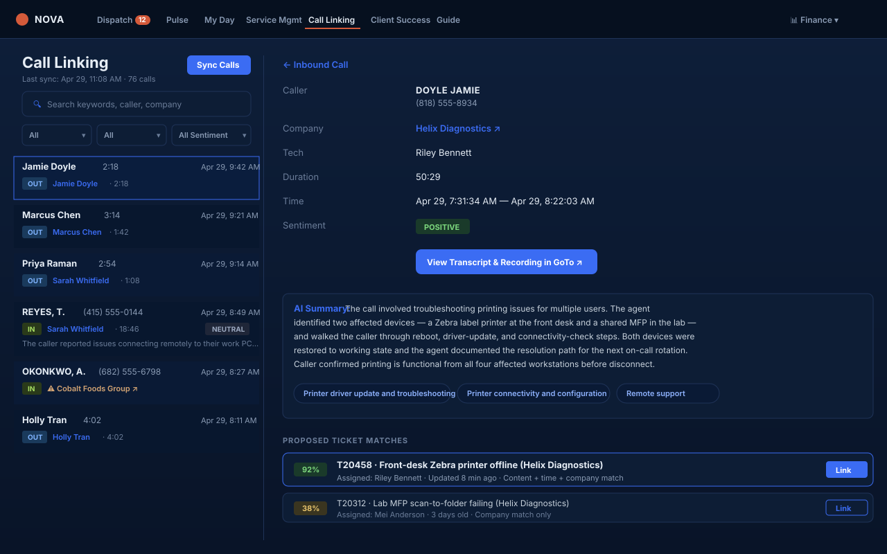

GoTo Connect calls sync into Nova with their transcript and summary, plus AI-suggested ticket matches — so the tech links the right one in one click instead of digging through Autotask. Live call state shows up on the Status Board the moment the phone rings.

Calls come in faster than tickets do. A tech ends a 12-minute support call, then opens Autotask, searches for the company, opens five tickets to find the right one, copy-pastes a summary they wrote in their head, fixes the time entry, and moves on. Multiply by 30 calls a day across the team and you've burned an FTE on data entry that should be automatic.
Worse: half those calls don't get linked at all. The ticket reads "called user, resolved" with no transcript, no recording reference, nothing the next tech (or the QBR) can audit.
Nova pulls call records from GoTo Connect throughout the day — direction, parties, duration, recording link. No browser plugin, no softphone replacement.
Caller-ID is matched to the Autotask company and contact, so each call lands with the right client.
The transcript, summary, sentiment and topics come in with each call, so every call is readable and searchable.
AI reads the call against the company's open tickets and proposes the best matches, each with a "Link" button. The tech clicks once.
Nova weighs what was said against what's already open for that client. A person always makes the link — nothing is linked on its own.
AI compares what the caller talked about with the company's open tickets.
Closed history stays out of the way, so suggestions point at work that can still be updated.
Suggestions come from the caller's own company, so a call never lands on another client's ticket by accident.
The tech confirms the match, or searches for the right ticket when the suggestion is wrong.
Find every call that mentioned "Outlook profile." Search covers what was said, not just caller name and date.
Show me unlinked inbound calls from this week with negative sentiment — that's the QBR-prep view in one filter.
Printer connectivity, password reset, M365 license. Topics show patterns the ticket subject line never captures.
One-click jump to the full GoTo Connect record. Audio and transcript stay where they live; Nova just owns the linking layer.
Per-call privacy controls for sensitive calls. Both actions are audited; admin role required.
When the proposed matches are wrong, search by ticket number, title, or company. The match becomes training data for next time.
No. GoTo Connect is the supported provider today. If you're on RingCentral, Zoom Phone, or Dialpad — tell us; we add providers based on customer ask.
Recordings stay in GoTo. Nova stores the transcript and summary, and an admin can purge them for any call. Your AI provider's enterprise terms cover the AI matching.
The suggestions are a starting point, not an automatic link. The tech confirms every match and can search by ticket number, title or company when the suggestion is wrong.
Yes. Filter the inbox by direction, sentiment, link state and more.
No. Calls are taken in GoTo exactly as today; Nova picks them up afterward.
Yes — ticket matching uses your AI key. The cost per call is small and shows up in your provider dashboard.
Where live call state shows up. On-call, in-meeting, available — visible to dispatch in real time.
The phone-system integration that powers call linking and live presence on the dispatch board.
When a phone call creates a new ticket via voicemail-to-ticket, AI Triage classifies it the same way email tickets land.
In the demo we'll connect your GoTo tenant, replay yesterday's calls, and show you the matches Nova would have proposed.